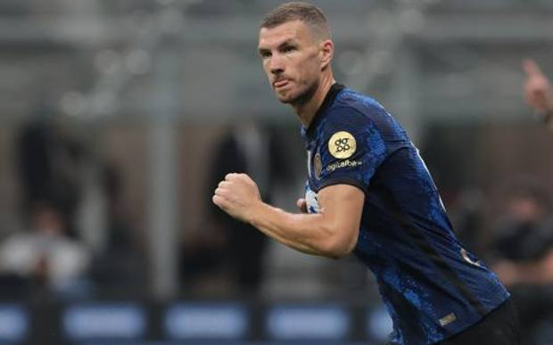
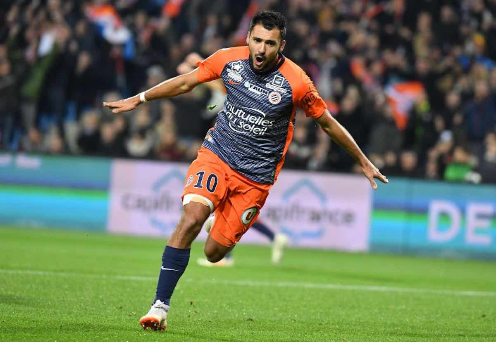

Attenzione! I gol potrebbero non essere aggiornati
Classifica capocannonieri nei campionati europei 21/22
10° posizione:

nome: Edin
cognome: Dzeko
ruolo: Attacante
squadra attuale: Inter
nazionalità: Bosnia ed Erzegovina
Edin Dzeko nato a Sarajevo il 17 marzo del 1986, gioca attualmente nell'Inter e con 6 gol è al decimo posto di questa speciale classifica di marcatori
9° posizione:
nome: Jonathan
cognome: David
ruolo: Attacante
squadra attuale: Lille
nazionalità: Canadese
Jonathan David nato a New York il 14 gennaio del 2000, gioca attualmente nel Lille e con 7 gol è al nono posto di questa classifica, avendo però giocato 2 partite in più rispetto al decimo posto
8° posizione:

nome: Gaëtan
cognome: Laborde
ruolo: Attacante
squadra attuale: Rennais
nazionalità: Francese
Gaëtan Laborde nato a Mont-de-Marsan il 3 maggio del 1994, gioca attualmente nel Rennais e con 7 gol è all'ottavo posto di questa classifica, avendo ,anche lui, giocato 2 partite in più rispetto al decimo posto
7° posizione:

nome: Mohamed
cognome: Salah
ruolo: Attacante
squadra attuale: Liverpool
nazionalità: Egiziana
Mohamed Salah nato a Nagrig il 15 giungo del 1992, gioca attualmente nel Liverpool e anche lui con 7 gol è al settimo posto di questa classifica
6° posizione:
nome: Jamie
cognome: Vardy
ruolo: Attacante
squadra attuale: Leicester City
nazionalità: Inglese
Jamie Vardy nato a Sheffield il 11 gennaio del 1987, gioca attualmente nel Leicester City e anche lui con 7 gol è al sesto posto di questa classifica
5° posizione:
nome: Patrik
cognome: Schick
ruolo: Attacante
squadra attuale: Bayer Leverkusen
nazionalità: Ceca
Patrik Shick nato a Praga il 24 gennaio del 1996, gioca attualmente nel Bayer Leverkusen e con 7 gol è al quinto posto di questa classifica
4° posizione:
nome: Ciro
cognome: Immobile
ruolo: Attacante
squadra attuale: lazio
nazionalità: Italiana
Ciro Immoible nato a Torre Annuziata il 20 Febbraio del 1990, gioca attualmente nella Lazio e con 7 gol è al quinto posto di questa classifica, a pari merito con il quinto,sesto,settimo,ottavo e nono posto
3° posizione:
nome: Karim
cognome: Benzema
ruolo: Attacante
squadra attuale: Real Madrid
nazionalità: Francese
Karim Benzema nato a Lione il 19 dicembre del 1987, gioca attualmente nel Real Madrid e con 9 gol è al terzo posto del podio di questa classifica
2° posizione:

nome: Erling
cognome: Haaland
ruolo: Attacante
squadra attuale: Borussia Dortmund
nazionalità: Norvegese
Erling Haaland nato a Leeds il 21 luglio del 2000, gioca attualmente nel Borussia Dortmund e con 9 gol è al secondo posto di questa classifica
1° posizione:
nome: Robert
cognome: Lewandowski
ruolo: Attacante
squadra attuale: Bayern Monaco
nazionalità: Polacca
Robert Lewandowski nato a Varsavia il 21 agosto del 1988, gioca attualmente nel Bayer Monaco e con 10 gol si aggiudica l'oro di questa speciale classifica
torna su
.jpg)